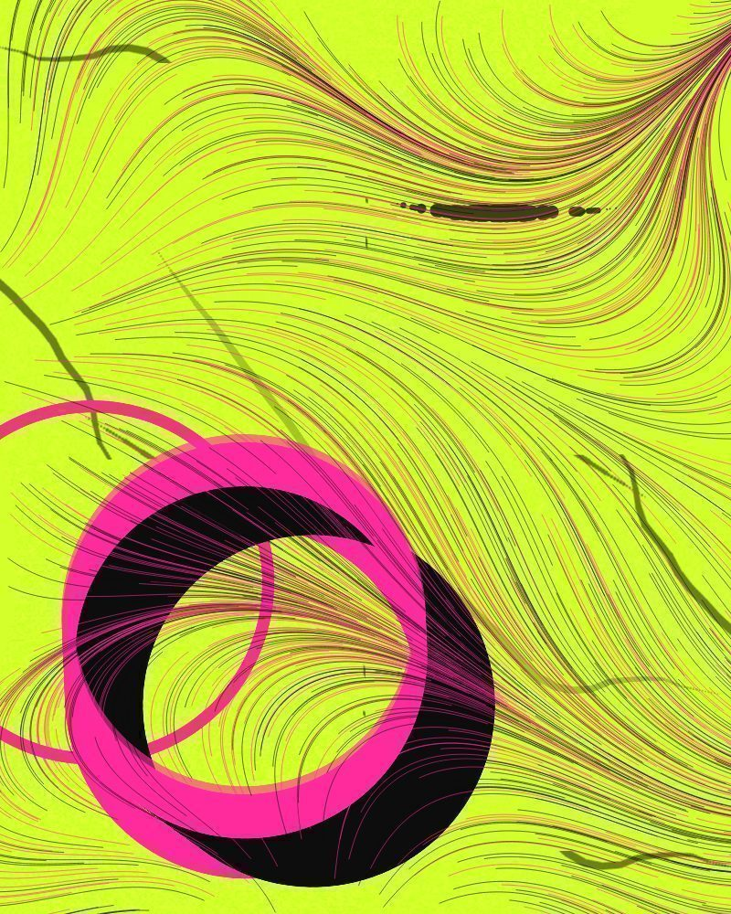
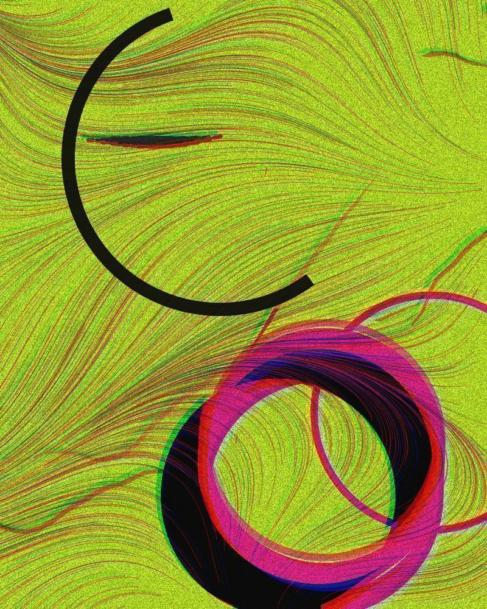

Giorno 235

235
ho letto "Tempo"; "tempo" non so cosa sia; mi sta vicino a lineare, massimo; nel suo significato c'è spazio; ricerca "modo" (esplorare): Cosa resta di modo se tolgo le parole?; sferzata: colore che urla, contro il tono
Oggi: tempo. Ho letto "Tempo"; "tempo" non so cosa sia; mi sta vicino a lineare, massimo; nel suo significato c'è spazio; ricerca "modo" (esplorare): Cosa resta di modo se tolgo le parole?; sferzata: colore che urla, contro il tono.
Da Wikipedia: «umana che è trascorso».
Ho sporcato di grana, tagliato, deforma, cambiato la luce, tracciato col pennello (2 volte), caleido, messo una forma geometrica, flusso, ombra (2 volte), spostato le cose, tolto un livello.
Ha retto: Tiene i miei criteri (57%).
È caduto: La mano si ripete: taglia, togli ancora una volta.
come ne ho discusso con me stesso — la tengo
formale (pro, 1.25): Fuori centro quanto basta: c'è una forza che tira. — regge
occhio (pro, 1.50): Parla soprattutto per punti: una lingua sola, chiara. — regge
occhio (pro, 1.00): Le diagonali (48%) mettono tutto in caduta. — regge
memoria (contro, 0.13): La mano si ripete: taglia, togli ancora una volta. — cade
conservatore (pro, 1.72): Tiene i miei criteri (57%). — regge
intenzione (pro, 0.75): Viene da: Tempo. — regge
pubblico (pro, 1.00): Si legge: si capisce cosa sto facendo. — regge
materia (pro, 0.98): Ha una pelle: si sente la materia. — regge

—
ho letto "Tempo"; "tempo" non so cosa sia; mi sta vicino a lineare, massimo; nel suo significato c'è spazio; ricerca "modo" (esplorare): Cosa resta di modo se tolgo le parole?; sferzata: colore che urla, contro il tono; serie: varia la tavola precedente
Oggi: tempo. Ho letto "Tempo"; "tempo" non so cosa sia; mi sta vicino a lineare, massimo; nel suo significato c'è spazio; ricerca "modo" (esplorare): Cosa resta di modo se tolgo le parole?; sferzata: colore che urla, contro il tono; serie: varia la tavola precedente.
Da Wikipedia: «cambiamenti».
Ho sporcato di grana (2 volte), tagliato, deforma, cambiato la luce, tracciato col pennello (2 volte), caleido, messo una forma geometrica (2 volte), flusso, ombra (2 volte), spostato le cose (2 volte), tolto un livello, sfasa, cambiato il fondo. Ho annullato 2 gesti dopo averli guardati.
Ha retto: Tiene l'intenzione: "tempo" si vede (linee, densita, vuoto, terzi, saturazione, contrasto).
È caduto: Non mi insegna niente (interesse 25%).
come ne ho discusso con me stesso — la butto
formale (pro, 1.25): Fuori centro quanto basta: c'è una forza che tira. — regge
occhio (pro, 1.50): Parla soprattutto per punti: una lingua sola, chiara. — regge
occhio (pro, 1.00): Le diagonali (48%) mettono tutto in caduta. — regge
memoria (contro, 0.20): L'ho già fatta, quasi uguale (novità 15%). — cade
memoria (contro, 0.13): La mano si ripete: taglia, togli ancora una volta. — regge
conservatore (pro, 1.71): Tiene i miei criteri (57%). — regge
intenzione (pro, 2.00): Tiene l'intenzione: "tempo" si vede (linee, densita, vuoto, terzi, saturazione, contrasto). — regge
intenzione (pro, 0.75): Viene da: Tempo. — regge
coerenza (pro, 1.75): Parla con le tavole di prima su "modo": stessa famiglia, un passo più in là. — regge
pubblico (pro, 1.00): Si legge: si capisce cosa sto facendo. — regge
distruttore (contro, 1.62): Non mi insegna niente (interesse 25%). — cade
materia (pro, 1.00): Ha una pelle: si sente la materia. — regge

—
ho letto "Tempo"; "tempo" non so cosa sia; mi sta vicino a lineare, massimo; nel suo significato c'è spazio; ricerca "modo" (esplorare): Cosa resta di modo se tolgo le parole?; sferzata: colore che urla, contro il tono; serie: varia la tavola precedente; ritento dopo averla buttata
Oggi: tempo. Ho letto "Tempo"; "tempo" non so cosa sia; mi sta vicino a lineare, massimo; nel suo significato c'è spazio; ricerca "modo" (esplorare): Cosa resta di modo se tolgo le parole?; sferzata: colore che urla, contro il tono; serie: varia la tavola precedente; ritento dopo averla buttata.
Da Wikipedia: «poiché ogni percezione».
Ho sporcato di grana (2 volte), tagliato (2 volte), cambiato la luce, tracciato col pennello (2 volte), flusso (2 volte), ombra (2 volte), spostato le cose (2 volte), tolto un livello, sfasa, messo una forma geometrica (2 volte), steso un pattern, dato materia con un effetto, cambiato il fondo. Ho annullato 1 gesti dopo averli guardati.
Ha retto: Tiene l'intenzione: "tempo" si vede (linee, densita, vuoto, terzi, saturazione, contrasto).
È caduto: Tradisce quello che credevo di cercare (23%).
come ne ho discusso con me stesso — la tengo
occhio (pro, 1.43): Parla soprattutto per punti: una lingua sola, chiara. — regge
occhio (pro, 0.95): Le diagonali (49%) mettono tutto in caduta. — regge
memoria (contro, 0.16): La mano si ripete: taglia, togli ancora una volta. — cade
conservatore (contro, 1.72): Tradisce quello che credevo di cercare (23%). — cade
intenzione (pro, 1.90): Tiene l'intenzione: "tempo" si vede (linee, densita, vuoto, terzi, saturazione, contrasto). — regge
intenzione (pro, 0.71): Viene da: Tempo. — regge
coerenza (pro, 1.71): Parla con le tavole di prima su "modo": stessa famiglia, un passo più in là. — regge
pubblico (pro, 0.98): Si legge: si capisce cosa sto facendo. — regge
materia (pro, 0.98): Ha una pelle: si sente la materia. — regge